1과목: 실험계획법
1. 하나의 실험점에서 30, 40, 38, 49(단위 db)의 반복 관측치를 얻었다. 자료가 망대특성이라면 SN비 값은 약 얼마인가?
2. 화공물질을 촉매 반응시켜 촉매(A) 2종류, 반응온도(B) 2종류, 원료의 농도(C) 2종류로 하여 23요인실험으로 합성률에 미치는 영향을 검토하여 아래의 데이터를 얻었다. SA×B의 값은?
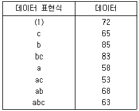
3. 두 변수 x와 y간의 n개의 데이터(xi, yi), I=1,2, …, n에 관한 직선회귀모형은 yi=β0+β1xi+ei이다. 여기서 β0, β1은 미지의 모수이며 ei~N(0,σ2)는 서로 독립인 오차를 나타내고 있다. 미지의 모수 β0, β1은 어떻게 추정하는가?
4. 3×3 라틴방격법에 의하여 다음의 실험데이터를 얻었다. 요인 C의 제곱합(SC)을 구하면? (단, 괄호속의 값은 데이터이다.)
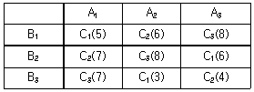
5. L27(313)형 직교배열표에서 요인 A를 5열, 요열 B를 10열에 배치하였다면, 교호작용 A×B가 배치되는 열 번호는?
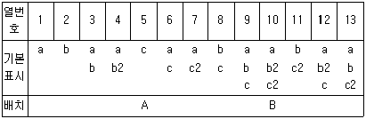
6. 어떤 작업의 가공순서를 2수준으로 하고 각각 5회씩 실험을 실시하여 다음과 같은 결과를 얻었다. 이 때, A1과 A2평균치의 차
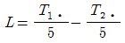
의 제곱합(SL)은 얼마인가?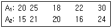
7. 23요인실험에서 정의대비를 A×B×C로 잡아 1/2일부실시법으로 실험을 실시하는 경우, A와 별명관계에 있는 요인은?
8. 세 가지의 공정 라인(A)에서 나오는 제품의 부적합품률이 같은가를 알아보기 위하여 샘플링 검사를 실시하였다. 작업 시간별(B)로 차이가 있는가도 알아보기 위하여 오전, 오후, 야간 근무조에서 공정 라이별로 각각 100개씩 조사하여 다음과 같은 데이터가 얻어졌다. 이 자료에서 A2 수준의 모부적합품률 P(A2)의 점추정치 값은 몇 %인가? (단위: 100개 중 부적합품개수)
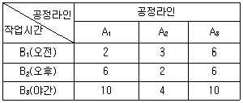
9. 어떤 화학반응 실험에서 농도를 4수준으로 반복수가 일정하지 않은 실험을 하여 다음 표와 같은 결과를 얻었다. 분산분석 결과 오차의 제곱합 Se=2508.8이었다. μ(A1)과 μ(A4)의 평균치 차를 α=0.⑤로 검정하고자 한다. 평균치의 차가 약 얼마를 초과할 때 평균치의 차가 있다고 할 수 있는가? (단, t0.975(15)=2.131, t0.95(15)=1.753이다.)
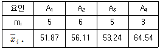
10. 반복이 일정한 1요인실험에서 데이터 구조식이 xij=μ+ai+eij(i=1,2,…,l,j=1,2,…,m)로 주어질 때
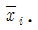
의 데이터 구조식은?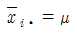
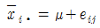
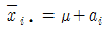
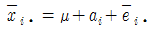
11. 로트 간 또는 로트 내의 산포, 기계간의 산포, 작업자간의 산포, 측정의 산포 등 여러 가지 샘플링 및 측정의 정도를 추정하여 샘플링 방식을 설계하거나 측정방법을 검토하기 위한 변량요인들에 대한 실험설계 방법으로 가장 적합한 것은?
12. A, B, C가 모수요인이고, R이 변량요인이며, A는 어떤 화학용액으로 제조 후의 숙성시간이 일정한 조건을 유지해야 하며 사용시간의 제한으로 A1, A2, A3를 분할할 수밖에 없고 또한 실험물량을 최소화하기 위해 A, B요인을 1차 요인으로 하고 수준변화가 용이한 요인 C를 2차 요인으로 하여 실험을 수행할 때, 어떤 실험법이 가장 적절한가?
13. LS(27)형 직교배열표에 관한 설명 중 틀린 것은?
14. 모수요인 A와 변량요인 B의 수준이 각각 l과 m이고, 반복수가 r일 경우의 모형은 다음과 같다. E(VA)의 식으로 맞는 것은?
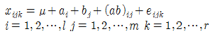
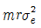
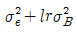
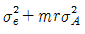
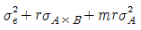
15. 요인 A, B는 모수요인, 요인 C는 변량요인인 반복 없는 3요인실험을 하였다. l=3, m=3, n=2이고, Ve=4.3, VA×C=106.7, VB×C=97.3, VC=57.4이였다면, σ2C의 추정값은 약 얼마인가?
16. 반복이 없는 23형의 교락법 실험에서 교호작용(A×B)을 블럭에 교락시킨 것으로 맞는 것은?
17. [표1]은 모수요인 A와 블록요인 B에 대해 난괴법 실험을 하는 경우이며 [표2]는 블록요인 B를 반복으로 하는 요인 A의 1요인실험으로 변환시킨 경우이다. 이때 A의 제곱합(SA)에 관한 설명으로 맞는 것은?
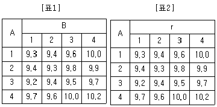
18. 모수요인의 특성으로 볼 수 없는 것은? (단, ai는 요인 A의 주효과이다.)
19. 다음 데이터는 두 개의 모수요인 A와 B의 각 수준에서 실험된 것이다. 요인 A의 효과를 검정할 수 있는 F0값은 약 얼마인가? (단, 오차의 제곱합 Se=0.56이다.)
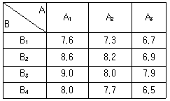
20. 실험의 효율을 올리기 위하여 취하는 행동 중 틀린 것은?
2과목: 통계적품질관리
21. ∑c=80, k=20일 때 c관리도(count control chart)의 관리 하한(lower control limit)은?
22. 관리도에서 일반적으로 사용하는 3σ관리한계 대신에 2σ관리한계를 사용하면 그 결과는 어떻게 되는가?
23. 계수형 샘플링검사 절차-제1부: 로트별 합격품질한계(AQL) 지표형 샘플링검사방식(KS Q IOS 2859-1 : 2014)의 보통검사에서 수월한 검사로 전환할 때 만족되야 하는 조건이 아닌 것은?
24. 계수 및 계량 규준형 1회 샘플링 검사(KS Q 0001 : 2013)에서 평균값 500g 이하는 합격시키고 평균값 540g 이상의 로트는 불합격시키고 싶다. 표준편차가 25g이며 α=0.⑤, β=0.10으로 샘플링 검사를 할 때 필요한 샘플 수(n)는? (단, Kα=1.645, Kβ=1.282이다.)
25. 계수 및 계량 규준형 1회 샘플링 검사(KS Q 0001:2013)에서 계수 규준형 1회 샘플링 검사방식 중 생산자 위험이 가장 큰 샘플링 방식은? (단, N은 로트의 크기, n의 표본의 크기, c는 합격판정개수이다.)
26. 두 집단의 모평균 차의 구간추정에 있어서 σ21, σ22를 알고 있고, σ21=σ22=σ2, n1=n2=n일 떄(
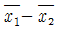
)의 표준편차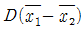
는?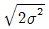
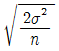
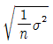
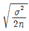
27. A자동차는 신차구입 후 5년 이상 자동차를 보유하는 고객의 비율을 추정하기를 원한다. 신뢰수준 95%에서 오차한계가 ±0.⑤로 하기 위해서 필요한 최소의 표본크기는 약 얼마인가?
28. 품질변동 원인 중 우연원인에 해당하지 않는 것은?
29. 어느 농장에서 양이 염소보다 평소 2배 더 많은 것으로 알고 있다. 이 주장을 검정하기 위하여 농장의 표본을 조사하였더니, 양은 2500마리, 염소는 500마리였다. 적합도 검정을 하고자 할 때, 검정 통계량(X20)값은 얼마인가?
30. A자동차 회사의 신차종 K자동차는 신차 판매 후 30일 이내에 보증수리를 받을 확률이 5%로 알려져 있다. 신규 판매한 자동차 5대를 추출하여 30일 이내에 보증수리를 받는 차량수의 확률에 관한 내용으로 틀린 것은?
31. 정규분포를 따르는 모집단의 모평균에 관한 검정의 검출력에 대한 설명 중 맞는 것은? (단, 귀무가설은 H0:μ=μ0이다.)
32. 계수 및 계량 규준형 1회 샘플링 검사(KS Q 0001:2013)의 평균치 보증 방식에서 맘소특성인 경우, OC곡선을 작성하기 위한 로트의 합격확률 L(m)의 표준정규분포에서의 좌표값 KL(m)을 구하기 위한 공식은? (단, U는 규격상한, m은 로트의 평균치,
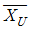
는 상한합격 판정치, σ는 로트의 표준편차, n은 샘플의 크기이다.)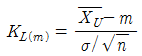
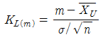
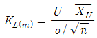
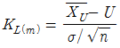
33. X1, …, Xn을 평균(μ), 분산(σ2)인 모집단으로부터 뽑은 확률표본이라 하고 표본평균을
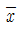
, 표본분산을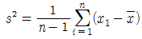
으로 정의할 때, 통계량 s2의 기대치 E(s2)은?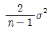
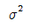
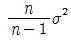
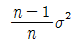
34. 일반적으로 R관리도에서는 ( ㉠ )의 변화를
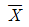
관리도에서는 ( ㉡ )의 변화를 검토할 수 있다. ㉠, ㉡에 알맞은 용어로 짝지어진 것은?35. 두 집단의 모부적합수 차에 대한 통계적 가설검정을 정규분포 근사를 활용할 때, 검정 통계량(u0)의 값은 얼마인가? (단, 두 집단 각각의 부적합수 x1=10, x2=6이다.)
36. 공정의 평균치가 28이고, 모표준편차(σ)가 10으로 알려져 있는 공정이 관리상태일 때 규격상한(U)이 40을 넘는 제품이 나올 확률은 약 얼마인가?
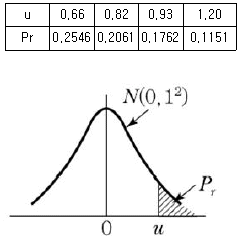
37. 계량치 검사를 위한 축차 샘플링 방식(부적합품률, 표준편차 기지)(KS Q ISO 8425:2009)에서 연결식 양쪽규격이고, ncum＜nt일 때, 상측 합격 판정치 A(U)는? (단, g는 합격 판정선 및 불합격 판정선의 기울기, hA는 합격 판정선의 절편이다.)
38. 어떤 부품의 제조공정에서 종래 장기간의 공정평균 부적합품률 9% 이상으로 집계되고 있다. 부적합품률을 낮추기 위해 최근 그 공정의 일부를 개선한 후 그 공정을 조사하였더니 167개의 샘플 중 8개가 부적합품이었으며, 귀무가설 H0:P≥P0는 기각되었다. 공정평균 부적합품률의 95% 위쪽 신뢰한계는 약 얼마인가?
39. 표본상관계수(rxy)를 구하는 식으로 틀린 것은? (단, 확률변수 X, Y의 곱의 합은 Sxy, 확률변수 X의 제곱합은 Sxx, 확률변수 Y의 제곱합은 Syy, 공분산은 Vxy, X의 분산은 Vx, Y의 분산은 Vy, n은 표본의 수이다.
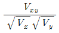
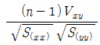
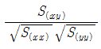
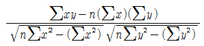
40. 샘플링오차에 관한 설명으로 틀린 것은?
3과목: 생산시스템
41. 휴대전화의 플래시 메모리 1로트를 생산하는데 소요시간은 다음과 같다. 이 때 라인불균형률(1-Eb)을 구하면 약 얼마인가?
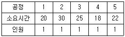
42. 원단위란 제품 또는 반제품의 단위수량 당 자재별 기준소요량을 의미하며, 이러한 원단위를 산출하는 데에는 여러 방법이 있다. 원단위 산출방법이 아닌 것은?
43. 플랜트 공장에서 1개월(30일) 중 27일을 가동하였다. 1일 작업시간은 24시간이고, 기준 생산량은 1일 1000톤이다. 1개월간 실제생산량은 24000톤이고, 실제 생산량 중 150톤은 부적합품이었다면 시간가동률은 얼마인가?
44. 스툽워치(stopwatch)에 의한 시간연구를 할 경우, 시간 관측 방법으로써 측정하기 힘들 정도로 요소작업이 너무 짧을 때에 사용되며, 몇 개의 요소작업을 번갈아 한 그룹으로 측정하여 시간치를 계산하는 방법은?
45. 4가지 부품을 1대의 기계에서 가공하려고 한다. 처리일수 및 잔여납기일수는 다음의 표와 같을 때, 최단작업시간규칙을 적용할 경우 평균처리일수는 얼마인가?
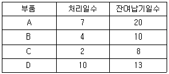
46. 광원을 일정한 시간간격으로 비대칭적인 밝기로 점멸하면서 사진을 촬영하여 분석하는 방법으로 작업의 속도, 방향 등의 궤적을 파악할 수 있는 것은?
47. 리(H. Lee)가 주장한 4가지 유형의 ‘공급사슬전략’과 ‘수요-공급이 불확실성’ 및 ‘기능적, 혁신적 상품’의 연결 관계로 틀린 것은?
48. 재고시스템에서 재주문점의 수준을 결정하는 요인이 아닌 것은?
49. 설비배치의 형태에 영향을 주는 요인이 아닌 것은?
50. 구매관리 방식 중 집중구매방식의 특성으로 틀린 것은?
51. 포드시스템에서 제시된 생산관리의 합리화 원칙으로 불리는 3S로 맞는 것은?
52. MRP시스템 운영에 필요한 기본요소 중 최종품목 한 단위 생산에 소요되는 구성품목의 종류와 수량을 명시한 것은?
53. JIT 생산방식의 특징으로 틀린 것은?
54. 고장이 일어나기 쉬운 부분에 감도가 높은 계측장비를 연결하여 기계설비의 트러블을 모니터링 함으로써 사전에 고장위험을 검출하는 보전활동방식은?
55. 한구회사의 Y제품 가격이 1,500원, 한계이익률이 0.75일 때, 생산량은 150개이다. 고정비는 얼마인가?
56. A회사는 조립작업장에 대해 하루 8시간 근무시간에서 오전, 오후 각각 20분간의 휴식 시간을 주고 있다. 과거의 데이터를 분석해 보면 컨베이어벨트가 정지하는 비율이 4%이고, 최종검사 과정에 5%의 부적합품률이 발생했다. 이 경우 일간 생산량인 1,000개일 때, 피치타임(pitch time)은 약 얼마인가?
57. 제품 A의 1월 수요예측치는 500개, 실제 1월의 수요는 450개였다. 평활상수 α=0.1인 단순지수평활법을 이용한 제품 A의 2월 수요예측치는?
58. 다음의 표는 M회사의 시간연구자료이다. 이 자료를 활용하여 단위당 표준시간을 구하면 약 얼마인가?
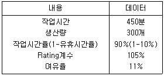
59. 간트차트에 대한 설명 중 틀린 것은?
60. 총괄생산계획(APP)의 문제를 경험적 내지 탐색적 방법으로 해결하려는 기법은?
4과목: 신뢰성관리
61. 신뢰성 축차샘플링 검사에서 사용되는 공식 중 틀린 것은?
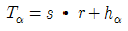
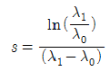
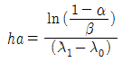
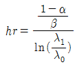
62. 수명시험 방식 중 정시중단방식의 설명으로 맞는 것은?
63. 가속수명시험을 위한 가속모델 중에서 확장된 아일링(Generalized Eyring)모델이 알헨니우스(Arrhenius)모델과 특히 다른 점은?
64. Y부품의 요구 신뢰도는 0.96인데 시주에서 구입 가능한 이 부품의 신뢰도는 0.8밖에 되지 않는다. 따라서 이 부품이 사용되는 부분을 병렬 리던던시(Redundancy) 설계를 사용하기로 하였다. 요구되는 최소 병렬 부품수(n)는 몇 개인가?
65. 와이블(Weibull) 확률지에 관한 설명으로 맞는 것은?
66. 와이블 분포에서 형상모수 값은 2.0, 척도모수 값은 3604.7, 위치모수 값은 0으로 추정된 경우, 평균수명은 약 몇 시간인가? (단,
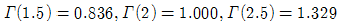
이다.)67. m/n계(n중 m구조) 리던던시에 관한 설명으로 맞는 것은?
68. 취급ㆍ조작, 서비스, 설치환경 및 운용에 관한 것으로서 제품의 신뢰도를 증가시키는 것이 아니고, 설계와 제조과정에서 형성된 제품의 신뢰도를 장기간 보존하려는 신뢰성은?
69. 우발고장기간에 발생하는 고장의 원인이 아닌 것은?
70. 와이블 분포가 지수분포와 동일한 특성을 갖기 위한 형상모수(m)의 값은 얼마인가?
71. 20개의 제품에 대해 5000시간의 수명시험을 실시한 실험결과 6개의 고장이 발생하였다. 고장시간은 다음과 같다. 고장시간이 지수분포를 따른다고 가정할 때, 고장률을 구하면 약 얼마인가?
72. 그림의 고장목(FT)에서 정상사상의 고장확률은 얼마인가? (단, 기본사상의 고장확률은 P(A)=0.002, P(B)=0.003, P(C)=0.004이다.)
73. 부하-강도 모델에서 μX, μY의 거리가 nX, nY일 때, 안전계수식으로 맞는 것은? (단, 부하평균: μX, 강도평균: μY, 부하표준편차:σX, 강도표준편차:σY이다.)
74. FMEA의 실시절차의 순서로서 맞는 것은?
75. 10000시간당 고장률이 각가 25, 38, 15, 50, 102인 지수분포를 따르는 부품 5개로 구성된 직렬시스템의 평균수명은 약 몇 시간인가?
76. 평균고장률 λ, 평균수리율 μ인 지수분포를 따를 경우 평균수리시간(MTTR)을 맞게 표현한 것은?
77. 어떤 시스템을 80시간 동안(수리기간 포함) 연속 사용한 경우 5회의 고장이 발생하였고, 각각의 수리시간이 1.0, 2.0, 3.0, 4.0, 5.0시간이었다면 이 시스템의 가용도(Availability)는 약 얼마인가?
78. 소시료 신뢰성 실험에서 평균순위법의 고장률 함수를 맞게 표현한 것은? (단, n은 시료의 수, I는 고장순번, ti는 I번째 고장발생시간이다.)
79. 신뢰성 설계기술 중 시스템을 구성하며 각 부품에 걸리는 부하에 여유를 두고 설계하는 기법은?
80. 신뢰도 함수 R(t)를 표현한 것으로 맞는 것은? (단, F(t)는 고장분포함수, f(t)는 고장 밀도함수이다.)
5과목: 품질경영
81. A.R Tenner는 고객만족을 충분히 달성하기 위해서 “고객의 목소리에 귀를 기울이는 것”을 단계 1, “소비자의 기대사항을 완전히 이해하는 것”을 단계 2로 정의하였다. 다음 중 단계 3인 완전한 고객 이해를 위한 적극적 마케팅 방법이 아닌 것은?
82. 생산되는 제품의 품질에 문제가 발생하였을 경우 이에 대한 현상을 파악하기 위하여 여러 가지 도구가 활용된다. 다음 중 원인분석을 위해 사용되는 도구가 아닌 것은?
83. 품질경영시스템- 기본사항과 용어(KS Q ISO 9000:2015)에서 명시한 용어 중 “요구사항을 명시한 문서”를 무엇이라 하는가?
84. 품질비용 중에서 평가비용에 해당되는 것은?
85. 품질문제 해결과정에서 이용되는 수법 중 80:20법칙이 적용되는 것은?
86. 표준을 적용기간에 따라 분류할 때 시한표준에 관한 설명으로 맞는 것은?
87. 품질경영시스템-요구사항(ISO 9001:2015)에서 품질경영원칙에 속하지 않는 것은?
88. 게이지 R&R 평가 결과 %R&R이 8.5%로 나타났다. 이 계측기에 대한 평가와 조치로서 맞는 것은?
89. 사내표준화 활동 시 치수의 단계를 결정할 때 사용하는 표준수 중 증가율이 가장 큰 기본수열은?
90. 품질에 대한 책임은 전 부서의 공동책임이기 때문에 무책임이 되기 쉽다. 이에 각 부서별로 품질에 대해 책임지는 업무내용의 연관성에 관한 설명으로 틀린 것은?
91. 사내표준화가 갖는 특징으로 틀린 것은?
92. 측정시스템에서 안정성(stability)에 대한 설명으로 틀린 것은?
93. 품질보증(QA)활동 중 제품기획의 단계에 관한 설명으로 틀린 것은?
94. 모토로라에서 시작된 6시그마 활동에 관한 설명으로 틀린 것은?
95. 어떤 품질특성의 규격값이 12.0±2.0으로 주어져 있다. 평균이 11.5, 표준편차가 0.5라고 할 때 최소공정능력지수(CPK)는 얼마인가?
96. 결과에 원인이 어떻게 관계하고 있으며, 어떤 영향을 주고 있는가를 한 눈에 알 수 있도록 작성하는 것은?
97. 기업이 고객과 관련된 조직의 내ㆍ외부정보를 층별ㆍ분석ㆍ통합하여 고객중심자원을 극대화하고, 고객특성에 맞는 마케팅활동을 계획ㆍ지원ㆍ평가하는 방법으로 장기적인 고객관리를 가능하게 하는 기법은?
98. 표준화란 어떤 표준을 정하고 이에 따르는 것 또는 표준을 합리적으로 설정하여 활용하는 조직적인 행위이다. 표준화의 원리에 해당되지 않는 것은?
99. 3개의 부품을 조립하려고 한다. 각각의 부품의 허용차가 ±0.03, ±0.02, ±0.⑤일 때 조립품의 허용차는 약 얼마로 하면 좋겠는가?
100. 기업에서 제조물 책임 방어대책(PLD)의 사전대책으로 볼 수 없는 것은?